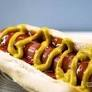

HOTDOG RECIPE

DESCRIPTION
A hot dog is a food consisting of a grilled or steamed sausage served in the slit of a partially sliced bun.
INGREDIENTS
- Cheese-chaddar
- English mustard
- Chilli powder
- Potatoe wafers
- Mayonnaise
- Sausage
- Hot dog bread
- Chopped onions
STEPS
- Cook the sausage, Slightly toss the chicken sausage in boiling water for 2 minutes. Meanwhile cut the hot dog bun in half lengthwise from the top and warm it a bit.
- Grill the sausage and fry the potatoes
- Apply mayonnaise and English mustard on a bun and arrange the sausage in between and then top up with French fries and sprinkle chilli powder on top. Then garnish with cheese.
- Arrange the hot dog, potato wafers, chopped onion and lettuce on the plate, serve hot.